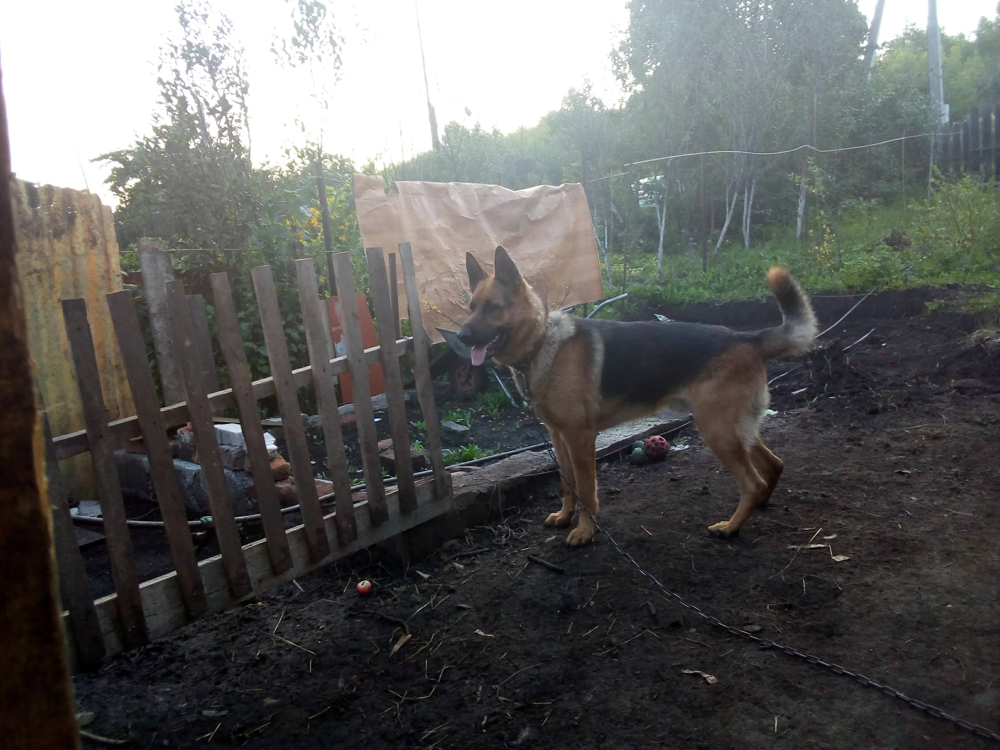

Второе домашнее задание
Формат сдачи ДЗ - один архив, со всеми файлами и скриншотами, либо pull request на github.
Создать сайт (html-документ с названием index.html), с рассказом о чём угодно.
Например, о себе или о любимом коте.
Страница должна содержать как минимум:
- Два заголовка.
- Два абзаца (параграфа).
- Одну картинку из интернета, которая находится в свободном доступе,
то есть которая будет доступна без регстранции и смс ;
- Одну картинку, которая будет браться локально.
Все локальные картинки должны храниться в папке img,
которая должна лежать рядом с html-документом.
- Один нумерованный список со значениями.
- Один маркированный список со значениями.
- Одну ссылку.
- Один локальный, подключенный css-файл, в котором прописаны пара стилей, применяемых на
странице.
Описание
Есть у меня отличный охраник дачи.Немецкая овчарка

Живёт он практически с рождения на даче и отлично справляется с возложенными обязаностями :
- Хороший друг
- Охрана хозяев
- Охрана территории
За 3 года вырос красавец

Если есть желание
Тут можно поискать катинки собак